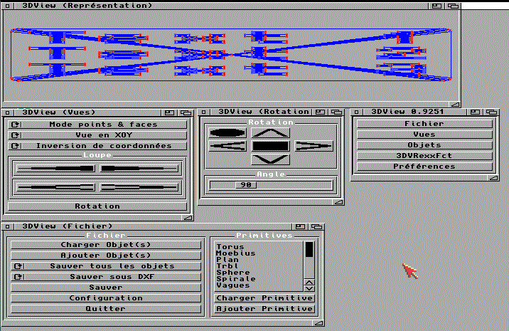

|
Menu | DDD2STLMUI | Text2STLMUI 3DView A quoi ca sert ?3DView permet de visualiser des objets 3D sur Amiga. Avec la ddd.library corrigee, il peut ouvrir des STL ASCII. Credit: 3DView et ddd.library par Andre Capus. UtilisationUtilisez 3DView pour verifier rapidement un STL cree avec Text2STLMUI ou converti avec DDD2STLMUI avant de l'envoyer au slicer. Limites
|